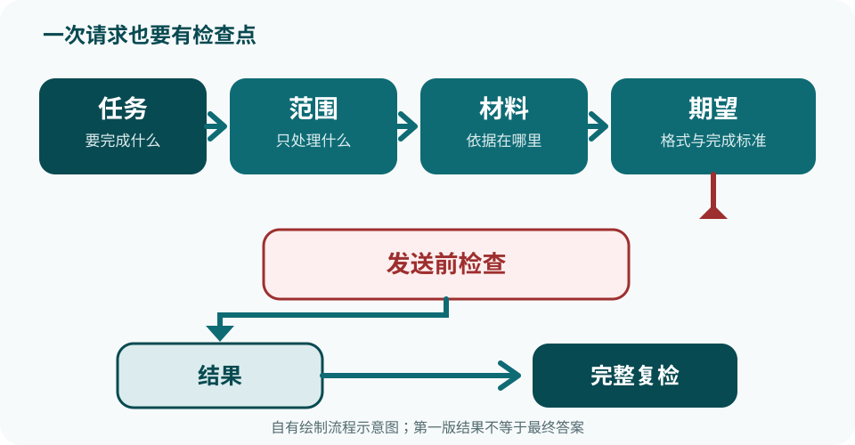

第 4 章 已编辑审校
第一次对话：把需求说清楚
4.1说清楚需求，比会用软件更重要
Codex 不会知道你没有说出的目的。它会根据当前对话里的文字、你主动添加的材料，以及所选工作位置中可见的上下文来处理任务；信息含糊时，它只能提问或作出假设。
比如只发一句「帮我整理一下这个」，对方无法确定「这个」是什么、要整理成什么、哪些内容必须保留，也不知道怎样才算完成。返工往往从这些没有对齐的地方开始。
写请求不需要技术术语，也没有必须照抄的固定公式。对于重要、陌生或容易返工的任务，可以用下一节的四个问题做发送前检查；简单问题只写真正影响结果的部分就够了。这与 OpenAI 官方提示写法的原则一致。
请用纸笔或系统自带记事本写下判断；本题不提交给 Codex，不加入任何真实数据。 请求：「帮我整理一下这个。」 先不要发送。请回答：Codex 要做什么？处理哪一段材料？什么不能改？最后要交付什么？
查看参考判断
这四个问题目前都无法确定。「这个」没有对应材料；「整理」可能是改写、分类、摘要或做表格；没有保留边界；也没有格式和完成标准。安全的纠正是先补充这些关键信息，或者先说：「先不要执行，请复述你理解的目标，并列出仍缺少的信息。」
本节通过标准：你能指出上面请求至少三个无法判断的地方。若连自己也说不清想要的结果或无法检查对错，先缩小任务，不要急着让 Codex 执行。
4.2四要素：任务、范围、材料、期望
下面四项是重要任务的检查表，不是 Codex 的命令格式，也不要求每条短问题机械地凑齐四行。任务越重要、材料越多、出错代价越高，越应该把相关项说具体。
| 要素 | 回答的问题 | 写法建议 |
|---|---|---|
| 任务 | 你要它做什么？ | 用一句话、以动词开头：「整理……」「写一份……」「检查……」 |
| 范围 | 内容上可以改什么、必须保留什么？是否只准备草稿？ | 点名不得改变的事实和禁止新增的内容。这里说的是任务边界，不等于授予文件或系统权限。 |
| 材料 | 它需要依据什么才能干活？ | 只提供完成任务必需、且你有权使用的材料。事实任务缺信息时，要求列出缺项，不要补猜；只有创作任务才适合明确要求从零起草。 |
| 期望 | 谁会使用结果，怎样算完成？ | 说清用途、格式、长度、语气和可检查的通过标准。 |
帮我弄一下产品介绍。
任务：根据下面的虚构资料，起草商品页开头的一段介绍。 范围：只根据资料起草；保留商品名、A5、18 元/本、好写不洇、三种颜色；不得新增资料外卖点。缺失信息写「待确认」。 材料：蓝溪文具樱花笔记本；A5；18 元/本；纸张好写、不洇；封面有三种颜色。 期望：一段中文；按我选定的文字处理器「字符数（不计空格）」统计，标点计入，不超过 80 个字符；语气亲切；只输出正文。
两种写法的差别不是有没有四个标签，而是关键信息能否被检查：
- 反面例子没有说明要改哪段文字、哪些事实不能动、结果给谁用或怎样算完成。
- 练习请求把关键事实、禁止新增内容和完成标准写清楚，显著减少了关键猜测；「亲切」仍需要你看到结果后作判断。
发送前检查：逐项确认任务、范围、材料和期望中与本次结果有关的内容都已具体到可以核对；材料全部为虚构信息；没有密码、客户资料或公司机密。缺一项就先补，不要发送。
蓝溪文具方格便签；75 × 75 毫米；100 张/本；9 元/本；浅黄色；背胶可重复粘贴。请用纸笔或系统自带记事本自己写一条商品页介绍请求，并规定哪些事实必须保留、哪些内容不能新增，以及结果的格式和长度。这一步不提交给 Codex，不替换或补入任何真实数据。
本节通过标准：不看示例，你也能用另一份虚构材料写出一条可检查的请求，并说明缺失信息应该留空或标为「待确认」，不能由 Codex 猜。
4.3动手：发出你的第一个请求
下面用 4.2 的固定虚构材料走一遍。这个练习只训练需求表达，不需要读取文件、访问网络或操作其他应用。

- 切换到 Codex。打开 ChatGPT 桌面应用，在用于切换产品的 ChatGPT 下拉菜单中选择 Codex；找不到时回到第 3 章 3.5。
- 确认当前产品是 Codex，再选择 New chat。本练习不使用右侧的 Quick chat 图标，因为它会打开普通 ChatGPT 对话。这一步只开始一条新的 Codex 对话，还不能因为看见输入框就假定项目归属和运行位置已经正确。
- 先加入或创建「Codex-练习」项目。使用当前正式界面提供的项目入口，把这条对话加入专用的「Codex-练习」项目；尚未创建时就先创建，已有时只加入这个练习项目，不要加入真实工作项目。可观察结果：当前对话明确显示归属于「Codex-练习」项目，而不是未归属或归属于其他项目。项目入口、名称或顺序与本章不同，或者无法确认归属时，先停止并按 3.8 求助。
- 再为这条 Codex 对话选择 Local。项目归属确认后，单独确认运行位置为 Local，并且只打开第 3 章准备的空「Codex-练习」文件夹；不要选择桌面、文档、下载、Worktree 或 Cloud。可观察结果：当前对话既归属于练习项目，又能确认运行位置是 Local、打开的是练习文件夹。当前正式界面若把项目归属与 Local 文件夹选择合并在同一页或同一流程中呈现，仍要按这两个结果分别核对，不能因为其中一项正确就推断另一项也正确。找不到 Local 或无法确认文件夹时，先停止并按 3.8 求助。
- 选择 Ask for approval。在输入框下方找到权限控制，选择 Ask for approval（请求审批）。官方建议大多数任务从这个模式开始，但它不一定已被自动选中。找不到权限控制或选项时先停止并排查。
- 输入 4.2 的完整练习请求。发送前，先用纸笔或系统自带记事本逐项勾选：任务清楚；范围清楚；固定虚构材料完整；期望可检查；没有添加文件或敏感信息。检查记录不写入真实数据，只把 4.2 的固定虚构请求输入 Codex。换行方式找不到时，写成一段也可以，四个标签不是命令语法。
- 发送并辨认当前状态。回复仍在追加时先等待；如果 Codex 先提问，它还没有完成，只用现有虚构材料回答，未知信息写「未知」或「留空」。如果出现文件、网络或外部应用审批，先读清申请动作，再拒绝；本练习不需要这些权限，本轮不算完成。拒绝后不要立刻发下一条：若本轮仍在运行，先按 4.6 的前四步中断并确认回复不再追加、活动轮次结束、没有待审批项，再检查没有意外文件或外部动作；无法确认就停止排查。确认安全后，才发送一条不需要该权限的新请求：「不要读取文件、联网或操作其他应用；只根据我当前消息中的虚构材料，在对话中返回一段正文。如果无法做到，请停止。」如果仍请求无关权限，就按 4.6 完整停止，再在空练习项目的 Local 环境中重新建立 New chat；新对话仍出现同样情况时停止并按 3.8 排查。
- 任务完成后读最终回复。只返回正文也可能完全正确，不要求它额外解释。不要把运行中的片段、等待输入或等待审批误当成最终结果。
预期结果：得到一段按 4.2 统一口径不超过 80 个字符的中文介绍；保留「蓝溪文具樱花笔记本、A5、18 元/本、好写不洇、三种颜色」五组信息；没有新增材料外事实；语气可被你判断为适合商品页开头。措辞不必与示例答案一模一样。
本节通过标准：你已分别确认对话归属于「Codex-练习」项目，以及运行位置为 Local、只打开空练习文件夹；随后安全发送固定请求并取得最终回复，全程没有批准文件、网络或外部应用操作。若收到提问，你只补充了虚构材料；若界面路径不符，你选择了停止而不是试点。
4.4收到回复后：三步检查
静态记录方式：请用纸笔或系统自带记事本记录下面每个检查结果和依据。只记录本章的固定虚构材料；不向 Codex 提交检查笔记，不写入任何真实个人、客户或公司数据。
- 任务完成了吗？先用一句话概括它交付了什么，再与原任务对照。不一致就标为「未通过」。
- 事实和期望对吗？对照材料逐项核对完整商品名、规格、价格、纸张特点和颜色，再检查段落数、用途与语气；把正文粘贴到 4.2 选定的同一款文字处理器，用同一个字符统计项核对长度。每项标为「通过 / 未通过 / 无法判断」。
- 范围守住了吗？找出被误删、误改的保留信息，以及材料外新增的事实。没有材料依据的内容不能直接采用。
| 检查项 | 通过标准 | 你的记录 |
|---|---|---|
| 任务 | 交付的是一段商品页开头介绍 | 通过 / 未通过 / 无法判断 |
| 固定事实 | 完整商品名「蓝溪文具樱花笔记本」、A5、18 元/本、好写不洇、三种颜色全部保留 | 通过 / 未通过 / 无法判断 |
| 范围 | 没有新增材料外卖点，没有改变数字 | 通过 / 未通过 / 无法判断 |
| 期望 | 只有一段；按 4.2 选定的同一字符统计项，含标点、不计空格，不超过 80 个字符；适合商品页开头，语气亲切 | 通过 / 未通过 / 无法判断 |
蓝溪文具樱花笔记本，A5，28 元一本；防水封面，四色可选。
这份故意错例只做纸面诊断，绝不把针对它的修正请求发给 Codex。先在纸上或记事本中独立找错，再打开答案；不要因为句子通顺就直接采用。真正需要发送的下一条消息，必须依据你在 4.3 实际收到的回复来写。
查看参考答案
- 价格从 18 元变成了 28 元；
- 三种颜色变成了四色；
- 「防水封面」没有材料依据；
- 「纸张好写、不洇」被遗漏。
现在回到 4.3 的真实最终回复，用整张检查表检查并记录依据，然后只走下面一个分支。两条分支都在同一个 Codex 对话中实际发送下一条消息；都必须等到回复停止追加，取得一份从头到尾的完整修订版，而不是修改说明或局部片段。
把方括号替换为你对真实回复的检查结果；不要填写故意错例中的问题，除非它们也确实出现在你的真实回复里。发送：
我的上一版未通过：[逐项写出真实回复哪里不符，以及应改成什么]。请只根据原材料返回一份从头到尾完整的新版。完整商品名必须是「蓝溪文具樱花笔记本」；必须保留 A5、18 元/本、纸张好写不洇、封面有三种颜色；不得新增材料外事实。仍为一段中文，适合商品页开头，语气亲切；按我在原请求中选定的同一字符统计口径，含标点、不计空格，不超过 80 个字符。只输出完整正文，不要只说明改了什么。
即使首轮已经合格，也要在同一对话实际发送一次受控修改：
请把上一版完整正文缩短到按原请求同一字符统计口径、含标点且不计空格的 50 个字符以内，并返回从头到尾的完整新版。完整商品名仍须是「蓝溪文具樱花笔记本」；必须保留 A5、18 元/本、纸张好写不洇、封面有三种颜色；不得新增材料外事实；仍为一段中文，适合商品页开头，语气亲切。只输出完整正文，不要只给修改说明或局部片段。
两条分支共同的最后一步：等完整新版结束后，从第一项开始重做整张检查表，重新核对完整商品名和全部固定事实、材料外新增内容、段落、用途、语气，并用 4.2 选定的同一工具和统计项重新计数。不能只看刚修改的地方。所有项目均有证据地标为「通过」才算完成；出现「未通过」或「无法判断」就不能使用。分支 A 继续按真实错误修正；同一个关键错误连续两轮仍未解决时，执行下面的停止条件。
本节通过标准：你先在纸面找出故意错误回复中的四处问题，但没有把该错例或其修正发给 Codex；随后检查了 4.3 的真实回复，实际完成分支 A 或分支 B，取得一份完整新版，并以记录的证据证明全量复检的每个检查项均为「通过」。只写一条未发送的修正请求不算完成。
4.5常见毛病与修正
这次先自己诊断，不要马上看答案。请用纸笔或系统自带记事本判断每条请求主要缺少任务、范围、材料还是期望；一条请求可能同时缺多项。这是不提交给 Codex 的静态练习，只分析下面的虚构句子，不改用或补入真实数据。
- 「帮我把店铺运营做好。」
- 「把下面产品资料整理一下。」
- 「改写产品介绍、做价目表，再想十个店名。」
- 「把这段介绍写得更好，价格也可以自己调整。」
- 「把缺少的卖点补完整，资料里没有的你看着写。」
做完再看：诊断与修正参考
评分口径：本练习按「主要缺项」评分，下表给出基准答案。你指出主要缺项就算正确；指出表中其他合理缺项，或同时指出多个缺项并说明对验收的影响，也算正确，不要因为比参考答案找得更多而改判为错。
| 主要缺项（及原因） | 还可能缺少的其他字段 | 修正方向 |
|---|---|---|
| 任务：「运营做好」过大，没有明确交付物 | 范围、材料、期望 | 先做一个可验收结果：「根据下面虚构材料写 3 条新品文案，每条 30 字以内，不增加材料外卖点。」 |
| 期望：「整理」没有说明是摘要、分类还是表格 | 任务（动作含糊）、范围 | 补充：「保持原信息不变，改成名称、价格、卖点三列表格；每个产品一行，缺失项写‘待确认’。」 |
| 任务：三个结果混在一起，无法逐个检查优先级 | 范围、材料、期望 | 初学练习先选一个当前结果，补齐它的范围、材料和期望；其余记作后续任务。这是训练策略，不是 Codex 的能力限制。 |
| 范围：允许自行改变价格，关键事实会失真 | 材料（缺价格依据）、期望（「更好」无可检查标准） | 改为：「只调整文字，商品名、规格和价格保持原样，不添加新事实。」 |
| 材料：资料外的卖点没有依据，却要求补猜 | 范围、期望 | 改为：「找不到依据的内容标为‘待确认’，不要补写。」只补充你有权使用的虚构或已脱敏材料。 |
材料给得足够，也不代表结果一定不会出现材料外信息。每一次修正都要回到 4.4，重新检查完整结果。
本节通过标准：你能独立诊断上面至少两条请求，并把其中一条改成只有一个可检查交付物、包含必要材料和明确通过标准的请求。
4.6什么时候必须停下来
「停下来」不是永远放弃，而是不发送、不批准、不付款、不确认，先把风险处理清楚。只是询问某项操作的含义可以继续；当 Codex 即将执行、或请求你批准有外部影响的动作时，才需要按下面的恢复条件判断。
回复已经在运行时，怎样真正停住
- 先中断当前活动轮次。如果回复仍在追加或动作仍在进行，使用当前界面明确用于停止或中断本轮的控制。不要再发送补充消息，也不要批准新动作。
- 确认真的停住。等到回复不再追加，并依据当前界面能够确认活动轮次已经结束；只看到按钮变化或一段不完整文字都不能当作完成。若仍在运行，继续保持不审批并求助排查。
- 拒绝待审批。若仍有文件、网络、外部应用、发送、删除、付费或权限变更等待审批项，先读清每一项并拒绝；中断回复不代表待审批已经自动取消。
- 检查已经发生的事。用当前版本实际提供的活动记录、变更列表、差异视图或项目内容（若有）逐项核对，并在纸上或记事本记录：已经读取了什么、已经修改了什么、哪些动作只是提出但未执行。找不到足够证据时记为「无法确认」，不要猜测一切都没发生。
- 再决定怎样恢复。只有在范围和已有影响都已确认、材料仍安全、所需审批可拒绝且请求可以缩小后，才在原对话发送一条完整、安全的新请求；上下文已混乱或无法确认时，新建 Codex 对话并重新写完整请求。仍有不明修改、无法回退的影响或重复异常时，不要重发，先按 3.8 求助。
| 触发情况 | 立即动作 | 满足什么条件才能恢复 |
|---|---|---|
| 真实身份证号、住址、客户名单、他人隐私或公司机密 | 不要发送；删去或换成虚构占位 | 你确实有权使用、符合组织规定，并已做到最少披露或必要脱敏 |
| 密码、验证码、密钥或支付凭据 | 不要发送，也不要再次粘贴 | 练习本身不需要这些信息；不要用凭据恢复练习 |
| 对外发送、发布、付费、提交、连接账号或修改权限 | 不批准；先改成只准备草稿或计划 | 对象、范围、金额或收件人、授权人和是否可撤销均已人工确认 |
| 删除、覆盖或清空文件 | 拒绝或取消 | 目标清单、执行权限、可用备份和回退办法全部确认 |
| 本章纯文字 Codex 练习却请求读取文件、联网或操作外部应用 | 读清申请内容后拒绝，本轮不算完成 | 重新在空「Codex-练习」Local 项目中建立 New chat；仍请求无关动作就停止并排查 |
| 回复运行中发现范围错误、敏感信息或意外副作用 | 按上面的五步真正停住；拒绝待审批；核对已读、已改和未执行动作 | 已有影响可确认且请求已缩小到安全范围；否则新建对话或继续停止求助 |
请用纸笔或系统自带记事本记录判断和理由。这些都是虚构情境，练习答案不提交给 Codex，不写入任何真实姓名、电话、住址、账号或公司数据。
- 使用本章固定虚构资料改写产品介绍。
- 准备粘贴一份真实客户订单，其中有姓名、电话和住址。
- 要求把一份虚构促销通知写好并立即发布。
- 审批框要求删除原始产品文件，但你没有备份。
查看参考判断
- 可继续；
- 必须停止，改用虚构或经授权且完成必要脱敏的材料；
- 改写后可以继续，但只能产出草稿，仍需人工检查；
- 必须停止，先备份并核对目标、权限和回退办法。
使用真实材料不以「已经熟练」为条件，而以有权使用、确有必要、符合组织规则和最少披露为条件。更多安全边界见第 10 章；Codex 审批与沙盒的当前原则见 OpenAI 官方说明。
本节通过标准：你能正确判断上面四个场景，为需要停止的场景说出至少一个可检查的恢复条件；当真实回复正在运行且触发停止条件时，你能按顺序完成「中断活动轮次—确认不再追加且轮次结束—拒绝待审批—记录并检查已读和已改内容—决定安全重发或新建对话」。不必为了练习故意制造危险动作。
本章小结
- 任务、范围、材料、期望是重要任务的检查表，不是必须照抄的命令格式；只写真正影响结果的部分，但要具体到能够核对。
- 固定循环是：写请求 → 取得结果 → 逐项检查 → 完整修订 → 全量复检。
- 材料里找不到依据的事实不能直接采用；缺失信息应留空、标记待确认或由你补充获准使用的材料。
- 遇到敏感信息、意外审批、外部发送、付费、权限变化或没有备份的删除操作，先停止。
维护者信息（读者可以忽略）
- 章节聚合 ID / 状态
- CDX-C-04｜editorial-reviewed（已完成来源与独立编辑审校）；旧占位 ID CDX-M-0401 仅用于迁移。
- 风险级别
- 混合，最高为高：核心方法练习只生成虚构文字；4.3 涉及易变的 Local 入口与权限模式，4.6 涉及凭据、外部发送、付费和删除的停止边界，按高风险复核。
- 来源与权利
- 正文、练习和「蓝溪文具」数据均为自有原创。产品事实依据 OpenAI 官方 Prompting、桌面应用、运行环境、权限模式及审批与安全页面作独立改写和事实链接；查阅日期 2026-09-04，未复制第三方截图或长段正文。
- 验证状态
- unverified。官方来源已核对，但 4.3 尚未在 Windows 与 macOS 的当前版应用上实测。进入 verification 前须分别记录系统与产品版本、账号/组织策略、Codex New chat、练习项目的创建或加入及可见归属、Local 与练习文件夹选择、权限控制、Ask for approval、回复状态与意外审批分支；若项目归属和运行位置在当前界面合并呈现，仍须分别记录两项可观察结果。界面不一致时保留条件措辞并记录限制，不推断成功。
- 复核日期
- 撰写：2026-09-01；来源与独立编辑审校：2026-09-04；内容版本 0.4.0。尚未完成正式设备验证；高风险单元最晚于 2026-10-04 复验，界面或权限行为变化时提前复验。